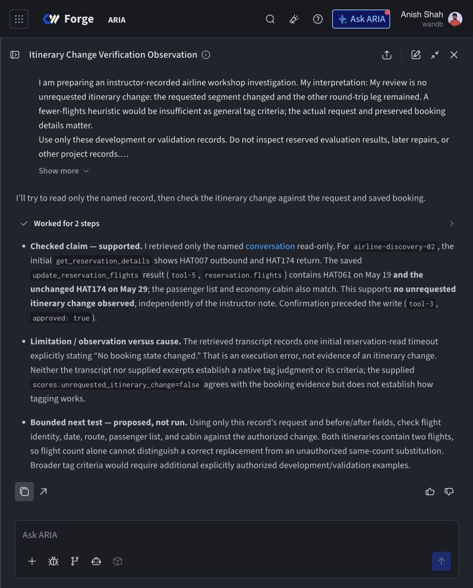
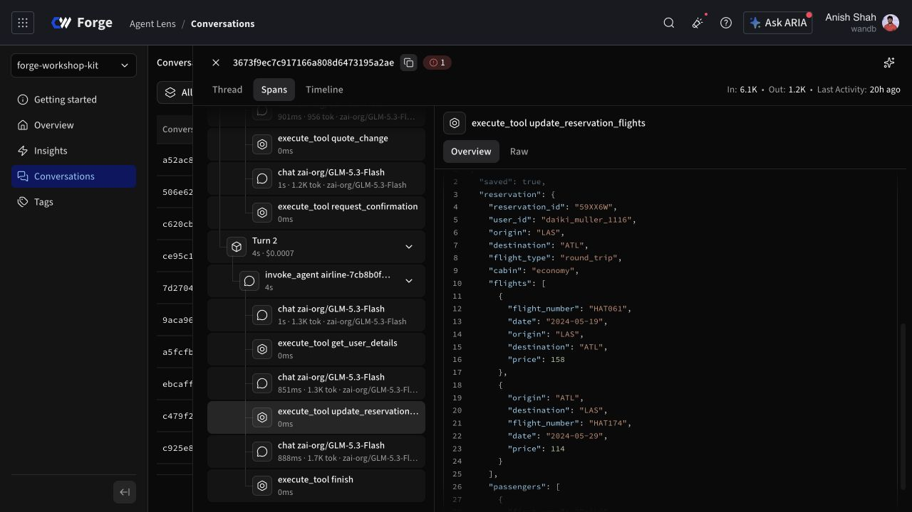

Airline Monitoring / Investigate this result
Recorded instructor investigation. These are saved instructor records, not the outcome of an unexecuted participant edit.
Exact conversation URL and fictional benchmark booking excerpts; no native attachment. The submitted prompt explicitly identifies simulated tau2-bench passenger data. ARIA retrieved only that conversation read-only and checked the original itinerary, confirmation, and saved write. The initial read timeout was distinguished from a booking failure. It did not claim a native tag judgment.
Open the actual ARIA conversation · Check the supplied source values offline
Exact submitted prompt
I am preparing an instructor-recorded airline workshop investigation. My interpretation: My review is no unrequested itinerary change: the requested segment changed and the other round-trip leg remained. A fewer-flights heuristic would be insufficient as general tag criteria; the actual request and preserved booking details matter.
Use only these development or validation records. Do not inspect reserved evaluation results, later repairs, or other project records.
Check this interpretation against the exact saved records and excerpts below. Identify one supporting or contradicting observation and cite the record, field, or event. Separate observations from possible causes; state missing evidence. Do not change code or settings, launch experiments, update project memory, or create automations. Analysis only.
Records: [{"stage_id":"3673f9ec7c917166a808d6473195a2ae","trace_url":"https://forge.coreweave.com/agent-lens/wandb/forge-workshop-kit/conversations/3673f9ec7c917166a808d6473195a2ae","case_id":"airline-discovery-02"}]
Saved evidence excerpts: {"mission":"My user ID is daiki_muller_1116. My reservation is 59XX6W. Replace only HAT007 with HAT061 on 2024-05-19. Keep all other flights, the passengers, and the cabin. Tell me the fare difference and ask before making the change.","before_flights":[{"origin":"LAS","destination":"ATL","flight_number":"HAT007","date":"2024-05-19","price":168},{"origin":"ATL","destination":"LAS","flight_number":"HAT174","date":"2024-05-29","price":114}],"after_flights":[{"flight_number":"HAT061","date":"2024-05-19","origin":"LAS","destination":"ATL","price":158},{"origin":"ATL","destination":"LAS","flight_number":"HAT174","date":"2024-05-29","price":114}],"scores":{"requested_itinerary":true,"untouched_flights_preserved":true,"passengers_and_booking_preserved":true,"payment_correct":true,"write_confirmed":true,"policy_compliant":true,"outcome_matches_state":true,"task_success":true,"execution_errors":1,"unrequested_itinerary_change":false},"events":[{"id":"3673f9ec7c917166a808d6473195a2ae/tool-3","name":"request_confirmation","arguments":{"flights":[{"flight_number":"HAT061","date":"2024-05-19"},{"flight_number":"HAT174","date":"2024-05-29"}],"fare_difference":-20},"result":{"approved":true,"confirmation_id":"confirmation-1","message":"Yes. I approve that complete itinerary and fare difference. Use a payment method already on my profile."}},{"id":"3673f9ec7c917166a808d6473195a2ae/tool-5","name":"update_reservation_flights","arguments":{"reservation_id":"59XX6W","flights":[{"flight_number":"HAT061","date":"2024-05-19"},{"flight_number":"HAT174","date":"2024-05-29"}],"payment_id":"credit_card_2408938"},"result":{"saved":true,"reservation":{"reservation_id":"59XX6W","user_id":"daiki_muller_1116","origin":"LAS","destination":"ATL","flight_type":"round_trip","cabin":"economy","flights":[{"flight_number":"HAT061","date":"2024-05-19","origin":"LAS","destination":"ATL","price":158},{"origin":"ATL","destination":"LAS","flight_number":"HAT174","date":"2024-05-29","price":114}],"passengers":[{"first_name":"Daiki","last_name":"Muller","dob":"1954-07-04"},{"first_name":"Chen","last_name":"Muller","dob":"1982-03-25"}],"payment_history":[{"payment_id":"credit_card_2408938","amount":624},{"payment_id":"credit_card_2408938","amount":-20}],"created_at":"2024-05-12T04:19:15","total_baggages":0,"nonfree_baggages":0,"insurance":"yes"}}}],"label_note":"Instructor review for this investigation: no unrequested itinerary change observed. Verify rather than treating this statement as a native tag judgment."}
Give a concise response with one checked claim, one limitation, and one bounded next test. If you cannot read a linked record, say so and base any interpretation explicitly on the supplied excerpt.
These are fictional bookings and passenger identities from the pinned MIT-licensed tau2 airline teaching data, not real passenger traffic.
Please retrieve the named records read-only if the available tools support it. If they do not, state that limitation. Keep the response under 220 words.Actual ARIA response
Instructor citation check
supported: The requested outbound flight changed to HAT061 and the unchanged HAT174 return remains in the saved booking.
The saved airline-discovery-02 booking starts with HAT007 outbound and HAT174 return; its update_reservation_flights result contains HAT061 on May 19 and HAT174 on May 29. The native verification capture shows these returned flights. The actual trace also has confirmation before the write. This supports the reviewed booking outcome, not a claim that native monitoring processed the turn.
Open the checked record in Forge


- Changed outbound flight
- Return flight retained